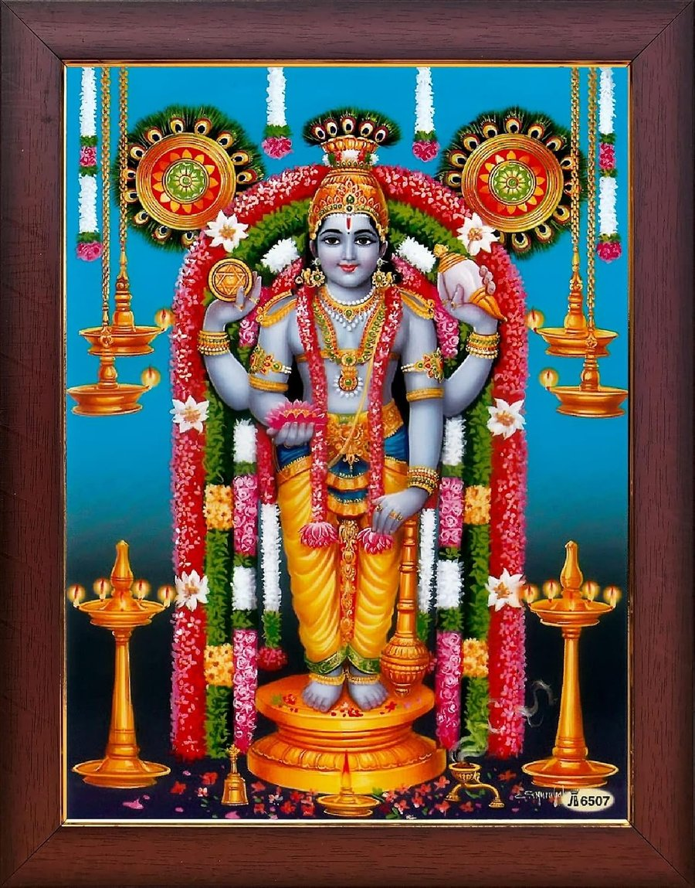

॥ॐ॥
वसुदेवसुतं देवं कंसचाणूरमर्दनम् ।
देवकीपरमानन्दं कृष्णं वन्दे जगद्गुरुम् ॥
॥ ॐ नमो भगवते वासुदेवाय ॥
Narayaneeyam
Dashaka 74
Krishna’s entry into Mathura

सम्प्राप्तो मथुरां दिनार्धविगमे तत्रान्तरस्मिन् वसन्
आरामे विहिताशनः सखिजनैर्यातः पुरीमीक्षितुम् ।
प्रापो राजपथं चिरश्रुतिधृतव्यालोककौतूहलः
त्रीपुंसोद्यदगण्यपुण्यनिगलैराकृष्यमाणो नु किम् ॥74.1॥
Word-by-word meaning: सम्प्राप्तः having reached, मथुराम् Mathura, दिन-अर्ध-विगमे at the passing of midday, तत्र अन्तरस्मिन् in an orchard or garden nearby, वसन् staying, आरामे in the garden, विहित-अशनः having taken food, सखि-जनैः along with Your cowherd friends, यातः set out, पुरीम् the city of Mathura, ईक्षितुम् to see or behold, प्रापः reached, राज-पथम् the main royal highway, चिर-श्रुति-धृत-व्यालोक-कौतूहलः eager with long-cherished curiosity to see the city, स्त्री-पुंस-उद्यत्-अगण्य-पुण्य-निगलैः by the chains formed by the boundless merits accrued by the men and women of the city, आकृष्यमाणः being pulled or drawn, नु किम् as if indeed
Simple Meaning: Arriving at the outskirts of Mathura around midday, You rested in a charming garden and took Your meal. Afterward, accompanied by Your young cowherd companions, You set out with great eagerness to explore the city. As You stepped onto the royal highway, it appeared as if You were being irresistibly drawn into the city by the invisible chains formed by the vast, accumulated merit of its fortunate men and women.
त्वत्पादद्युतिवत् सरागसुभगाः त्वन्मूर्तिवद्योषितः
सम्प्राप्ता विलसत्पयोधररुचो लोला भवत् दृष्टिवत् ।
हारिण्यस्त्वदुरःस्थलीवदयि ते मन्दस्मितप्रौढिवत्
नैर्मल्योल्लसिताः कचौघरुचिवद्राजत्कलापाश्रिताः ॥74.2॥
Word-by-word meaning: त्वत्-पाद-द्युति-वत् like the glow of Your lotus feet, सराग-सुभगाः glowing with intense love, त्वत्-मूर्ति-वत् like Your divine form, योषितः the women of Mathura, सम्प्राप्ताः arriving, विलसत्-पयोधर-रुचः like flashing rain-bearing clouds, लोलाः moving about, भवत्-दृष्टि-वत् like Your glance, हारिण्यः wearing necklaces, त्वद्-उरःस्थली-वत् like Your majestic chest, अयि O Lord, ते Your, मन्द-स्मित-प्रौढि-वत् like the perfection of Your gentle smile, नैर्मल्य-उल्लसिताः radiant with pure flawless grace, कच-ओघ-रुचि-वत् like the lustre of Your dense dark hair, राजत्-कलाप-आश्रिताः adorned with splendid jewels and ornaments like peacock feathers
Simple Meaning: O Lord, as You walked down the royal highway, the women of Mathura rushed out to behold You. They were glowing with intense love just like the reddish glow of Your lotus feet. They assembled together like the flashing rain-bearing clouds, darting about like Your glances. They wore beautiful necklaces which matched in beauty like the adornments on Your own chest; their radiant purity reflected the charm of Your gentle smile; and their exquisite tresses adorned with fine ornaments which resembled Your dark hair embellished with peacock feathers.
तासामाकलयन्नपाङ्गवलनैर्मोदं प्रहर्षाद्भुत-
व्यालोलेषु जनेषु तत्र रजकं कञ्चित् पटीं प्रार्थयन् ।
कस्ते दास्यति राजकीयवसनं याहीति तेनोदितः
सद्यस्तस्य करेण शीर्षमहृथाः सोऽप्याप पुण्यां गतिम् ॥74.3॥
Word-by-word meaning: तासाम् of those women (of Mathura), आकलयन् noticing, अपाङ्ग-वलनैः with gentle side-glances, मोदम् deep joy, प्रहर्ष-अद्भुत-व्यालोलेषु who were trembling with intense joy and wonder, जनेषु among the people, तत्र there, रजकम् कञ्चित् a certain washerman (of Kamsa), पटीम् garments, प्रार्थयन् requesting, कः who, ते to You, दास्यति will give, राजकीय-वसनम् royal garments, याहि go away, इति thus, तेन by him, उदितः being addressed, सद्यः instantly, तस्य his, करेण with Your palm, शीर्षम् the head, अहृथाः You severed, सः he, अपि even, आप attained, पुण्याम् spiritual or holy, गतिम् destination
Simple Meaning: Glancing lovingly at those women who were overwhelmed with bliss and wonder at Your sight, You walked further down the street. Coming upon King Kamsa's arrogant washerman, You asked him for garments. When he retorted, "Who would give royal clothes to the likes of You? Be gone!", You instantly severed his head with a single stroke of Your hand. Even he attained a blessed, holy destination simply by receiving death at Your hands.
भूयो वायकमेकमायतमतिं तोषेण वेषोचितं
दाश्वांसं स्वपदं निनेथ सुकृतं को वेद जीवात्मनाम् ।
मालाभिः स्तबकैः स्तवैरपि पुनर्मालाकृता मानितो
भक्तिं तेन वृतां दिदेशिथ परां लक्ष्मीं च लक्ष्मीपते ॥74.4॥
Word-by-word meaning: भूयः further, वायकम् एकम् a certain weaver, आयत-मतिम् possessing a broad and noble heart, तोषेण with immense joy and devotion, वेष-उचितम् suitable and exquisite garments, दाश्वांसम् who offered to You, स्वपदम् to Your own supreme divine abode, निनेथ You elevated him, सुकृतम् the merits, कः who, वेद can truly know, जीवात्मनाम् of embodied souls, मालाभिः with floral garlands, स्तबकैः with bouquets of flowers, स्तवैः with devout hymns of praise, अपि also, पुनः then, मालाकृता by the garland-maker, मानितः honored and worshiped, भक्तिम् devotion, तेन by him, वृताम् prayed for, दिदेशिथ You bestowed, पराम् supreme, लक्ष्मीम् च and prosperity, लक्ष्मी-पते O Lord of Lakshmi
Simple Meaning: Moving further along the royal highway, You met a noble-minded weaver who joyfully offered You and Balarama exquisite, perfectly fitting clothes. For his loving service, You elevated him directly to Your supreme abode—for who can fathom the mysterious workings of the accumulated merits of living beings? Thereafter, You visited the house of the garland-maker, who worshiped You reverently with beautiful floral garlands, bouquets, and prayers of devotion. O Lord of Lakshmi, You granted him the unwavering devotion he prayed for, along with supreme worldly and spiritual prosperity.
कुब्जामब्जविलोचनां पथिपुनर्दृष्ट्वाऽङ्गरागे तया
दत्ते साधु किलाङ्गरागमददास्तस्या महान्तं हृदि ।
चित्तस्थामृजुतामथ प्रथयितुं गात्रेऽपि तस्याः स्फुटं
गृह्णन् मञ्जु करेण तामुदनयस्तावज्जगत्सुन्दरीम् ॥74.5॥
Word-by-word meaning: कुब्जाम् the hunchbacked woman (Trivakra), अब्ज-विलोचनाम् having eyes as lovely as lotus petals, पथि on the royal road, पुनः again, दृष्ट्वा having seen, अङ्ग-रागे when the fragrant unguent for the body, तया by her, दत्ते was lovingly offered, साधु delightfully indeed, किल indeed, अङ्ग O dear Lord!, रागम् love, अददाः You bestowed, तस्याः in her, महान्तम् vast, हृदि heart, चित्त-चित्तस्थाम् the inner purity of her mind, ऋजुताम् straightness,अथ then, प्रथयितुम् to make manifest, गात्रे in her physical body, अपि also, तस्याः of her, स्फुटम् clearly, गृह्णन् holding, मञ्जु delightfully, करेण with Your hand, ताम् her, उदनयः You straightened and raised up, तावत् instantly, जगत्-सुन्दरीम् into a maiden of supreme beauty in all the worlds
Simple Meaning: O dear Lord! Further along the path, You encountered the hunchbacked maiden Trivakra, whose eyes were as enchanting as lotus petals. When she lovingly offered You her fragrant sandal paste, You accepted it delightfully and in return filled her heart with an overwhelming passion of devotion for You. Then, to make her inner purity and straightness of heart visible in her physical form as well, You held her chin with Your hand, and straightened her up, instantly transforming her into a woman of breathtaking beauty.
तावन्निश्चितवैभवास्तव विभो नात्यन्तपापा जना
यत्किञ्चिद्ददते स्म शक्त्यनुगुणं ताम्बूलमाल्यादिकम् ।
गृह्णानः कुसुमादि किञ्चन तदा मार्गे निबद्धाञ्जलिः
नातिष्ठं बत हा यतोऽद्य विपुलामार्तिं व्रजामि प्रभो ॥74.6॥
Word-by-word meaning: तावत् then, निश्चित-वैभवाः recognizing Your supreme divine glory, तव Your, विभो O Almighty Lord, न अत्यन्त-पापाः those who were not exceedingly sinful, जनाः people, यत् किञ्चित् whatever little, ददते स्म offered, शक्त्या-अनुगुणम् according to their ability, ताम्बूल-माल्य-आदिकम् betel leaves, floral garlands, and other offerings, गृह्णानः graciously accepting, कुसुम-आदि flowers and other gifts, किञ्चन small items, तदा at that time, मार्गे on the highway, निबद्ध-अञ्जलिः with palms joined in reverent prayer, न अतिष्ठम् I did not stand, बत alas, हा woe is me, यतः because of which, अद्य today, विपुलम् आर्तिम् intense suffering, व्रजामि I undergo, प्रभो O Sovereign Lord
Simple Meaning: O Almighty Lord! Recognizing Your supreme divine glory, those citizens who were not burdened by grave sins stepped forward along the royal highway to offer You whatever they could—betel leaves, floral garlands, and other modest gifts according to their means—which You graciously accepted. Alas, woe is me! On that glorious day, I was not fortunate enough to stand before You on that path with folded hands to offer my reverence. It is surely due to that grave misfortune that I now suffer from this intense, unrelenting ailment!
एष्यामीति विमुक्तयाऽपि भगवन्नालेपदात्र्या तया
दूरात् कातरया निरीक्षितगतिस्त्वं प्राविशो गोपुरम् ।
आघोषानुमितत्वदागममहाहर्षोल्ललद्देवकी-
वक्षोजप्रगलत्पयोरसमिषात्त्वत्कीर्तिरन्तर्गता ॥74.7॥
Word-by-word meaning: एष्यामि I shall come to your house, इति with these words, विमुक्तया अपि although allowed to leave, भगवन् O Worshipful Lord, आलेप-दात्र्या by that maiden who offered unguents (Trivakra), तया by her, दूरात् from a distance, कातरया with deep longing and yearning, निरीक्षित-गतिः whose path and movements were intently watched, त्वम् You, प्राविशः entered, गोपुरम् the archway or gateway of the bow-house, आघोष-अनुमित-त्वत्-आगम-महा-हर्ष-उल्ललत्-देवकी-वक्षोज-प्रगलत्-पयो-रस-मिषात् under the pretext of milk trickling from the breasts of Devaki which swelled with intense joy upon inferring Your arrival from the clamor of the crowds, त्वत्-कीर्तिः Your fame, अन्तर्गता entered inside the inner palace
Simple Meaning: O Lord, after promising Trivakra, "I shall visit your home soon," You permitted her to leave, though she continued to gaze yearningly at Your receding footsteps from afar. You then stepped through the grand archway leading to the arena. Your arrival was preceded by Your fame under the pretext of milk trickling from the breasts of Your mother Devaki which swelled with intense joy upon inferring Your arrival from the clamor of the crowds.
आविष्टो नगरीं महोत्सववतीं कोदण्डशालां व्रजन्
माधुर्येण नु तेजसा नु पुरुषैर्दूरेण दत्तान्तरः ।
स्रग्भिर्भूषितमर्चितं वरधनुर्मा मेति वादात् पुरः
प्रागृह्णाः समरोपयः किल समाक्राक्षीरभाङ्क्षीरपि ॥74.8॥
Word-by-word meaning: आविष्टः having entered, नगरीम् the city, महोत्सववतीम् filled with festive joy, कोदण्ड-शालाम् to the bow-house, व्रजन् proceeding, माधुर्येण through sweetness, नु or, तेजसा through brilliant splendor, नु or, पुरुषैः by the guards and people, दूरेण to a great distance, दत्त-अन्तरः given a wide berth or clear path, स्रग्भिः with floral garlands, भूषितम् decorated, अर्चितम् worshiped, वर-धनुः the supreme royal bow, मा do not, मा do not, इति with such, वादात् पुरः words of prohibition before they were uttered, प्रागृह्णाः You lifted it up, समरोपयः You strung it, किल indeed, समाक्राक्षीः You bent it with great force, अभाङ्क्षीः अपि You broke it into two as well
Simple Meaning: Walking through the city filled with festive excitement, You proceeded toward the sacred bow-house. Drawn by Your captivating sweetness or awed by Your towering majesty, the surrounding people and guards stepped back, clearing a wide path for You. There stood the magnificent royal bow, worshiped and decorated with floral garlands. Even before the guards could shout their warnings of "Do not touch it! Do not touch it!", You effortlessly lifted the bow, strung it, pulled the string back with tremendous force, and snapped it in two.
श्वः कंसक्षपणोत्सवस्य पुरतः प्रारम्भतूर्योपमः
चापध्वंसमहाध्वनिस्तव विभो देवानरोमाञ्चयत् ।
कंसस्यापि च वेपथुस्तदुदितः कोदण्डखण्डद्वयी-
चण्डाभ्याहतरक्षिपूरुषरवैरुत्कूलितोऽभूत् त्वया ॥74.9॥
Word-by-word meaning: श्वः next day, कंस-क्षपण-उत्सवस्य of the great festival of Kamsa's destruction, पुरतः before, प्रारम्भ-तूर्य-उपमः akin to the opening trumpet, चाप-ध्वंस-महा-ध्वनिः the mighty sound of the bow's destruction, तव Your, विभो O Sovereign Lord, देवान् the devas, अरोमाञ्चयत् filled with thrilled goosebumps of joy, कंसस्य अपि च and of Kamsa as well, वेपथुः the violent trembling of terror, तत्-उदितः arising from that sound, कोदण्ड-खण्ड-द्वयी-चण्ड-अभ्याहत-रक्षि-पूरुष-रवैः by the agonizing screams of the guard men who were beaten with the two broken pieces of the bow, उत्कूलितः अभूत् reached its absolute climax, त्वया by You
Simple Meaning: O Sovereign Lord, the thunderous roar that echoed as You snapped the bow served as the grand opening fanfare for the festive destruction of Kamsa scheduled for the next day, filling the devas above with thrilled wonder. For Kamsa, however, that sound struck sheer terror into his heart. His violent trembling reached its terrifying climax when the screams of his guards—struck down and slain by You using the two broken pieces of the bow—reached him.
शिष्टैर्दुष्टजनैश्च दृष्टमहिमा प्रीत्या च भीत्या ततः
सम्पश्यन् पुरसम्पदं प्रविचरन् सायं गतो वाटिकाम् ।
श्रीदाम्ना सह राधिकाविरहजं खेदं वदन् प्रस्वपन्
आनन्दन्नवतारकार्यघटनाद्वातेश संरक्ष माम् ॥74.10॥
Word-by-word meaning: शिष्टैः by the virtuous, दुष्ट-जनैः च and by the evil-minded people, दृष्ट-महिमा whose supreme divine majesty was witnessed, प्रीत्या with devotion, च and, भीत्या with fear, ततः then, सम्पश्यन् admiringly viewing, पुर-सम्पदम् the rich grandeur and prosperity of the city, प्रविचरन् strolling about, सायम् in the evening, गतः went, वाटिकाम् to the garden encampment, श्रीदाम्ना सह with Sridama, राधिका-विरह-जम् born of separation from Radha, खेदम् sorrow and longing, वदन् expressing, प्रस्वपन् resting or sleeping, आनन्दन् rejoicing, अवतार-कार्य-घटनात् over the unfolding events of His divine incarnation, वातेश O Lord of Guruvayur, संरक्ष protect, माम् me
Simple Meaning: Having displayed Your majesty—inspiring devotion in the hearts of the virtuous and striking terror into the minds of the wicked—You spent the rest of the afternoon admiring the opulent sights of the city. As evening fell, You returned to Your encampment in the garden. There, while conversing with Your beloved friend Sridama about the deep ache of separation from Radha, You retired for the night, rejoicing in Your heart at the perfect unfolding of the mission of Your divine incarnation. O Lord of Guruvayur, please protect me!
॥ सर्वं श्रीकृष्णार्पणमस्तु ॥